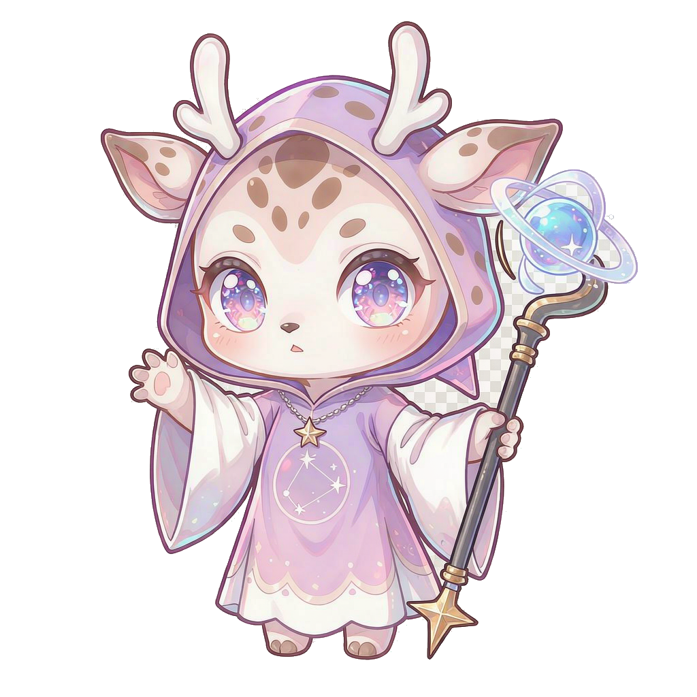
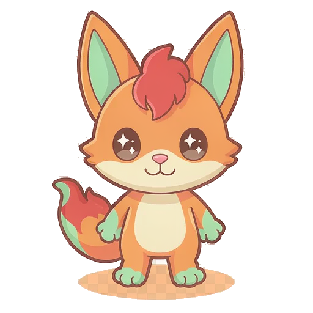

⚖️ 数值天平 差异补偿设计
基础 DPS：雷羽鹰 53.3 > 焰心 43.6(+灼烧≈54.5 有效) > 灵鹿 44.4 > 霜甲熊 31.4。差异由生存/机动补偿：雷羽鹰 -20% HP +25% 移速 + 闪避被动；霜甲熊 +50% HP + 15% 减伤但 DPS -29%；焰心输出上限最高但 HP -10% 无保底容错；灵鹿各项居中 + 唯一自回血。设计目标：每个英雄都有「最想选他的那局」，没有全方位上位替代。
雷→light（雷羽·光速突袭）、冰→water（霜甲·冻结迟滞）。此映射与五元素克制链/反应系统完全兼容，meta_upgrades.json 的 unlock_eagle/unlock_bear 描述已同步修正，后续立绘与文案均以本表口径为准。
🦌 英雄对比 共 4 位 · 属性条形对比

灵鹿祭司 木 · 初始英雄 · 均衡辅助自然祝福
每 60 秒回复 5% 最大生命（战斗中的稳定续航）
生命100
移速×1.00
攻击20
攻速间隔0.45s
基础 DPS44.4
治疗藤缚
玩法：均衡辅助：中庸的面板 + 稳定回血被动，最适合新手熟悉走位与克制链。
spirit_deer雷羽鹰 光 · 解锁 800 🍀 · 高速爆发
风暴闪避
每 45 秒自动闪避下一次受到的伤害（被动保命，无需操作）
生命80
移速×1.25
攻击16
攻速间隔0.30s
基础 DPS53.3
瞬步链雷
玩法：高速爆发：全队最快攻速与移速，但生命最低——玻璃大炮，靠走位风筝，失误即死。
hero_eagle · 占位图（星羽鸟），待云端出图替换为雷羽鹰正式立绘 霜甲熊 水 · 解锁 1200 🍀 · 重装坦克
霜甲熊 水 · 解锁 1200 🍀 · 重装坦克霜甲
受到的所有伤害固定 -15%（重装减伤，可叠加灵盾花）
生命150
移速×0.85
攻击22
攻速间隔0.70s
基础 DPS31.4
霜冻地震
玩法：重装坦克：生命最高 + 全队唯一常驻减伤被动，但攻速最慢移速垫底——硬抗推进流。
hero_bear · 占位图（石甲龟），待云端出图替换为霜甲熊正式立绘
焰心术士 火 · 解锁 1500 🍀 · 法术炮台余烬
每次命中附加 2 秒灼烧（每秒 3 点，可与元素反应叠乘）
生命90
移速×1.00
攻击24
攻速间隔0.55s
基础 DPS43.6
火球术召唤
玩法：法术炮台：单发最高伤害 + DoT 被动（有效 DPS 约 55 为全队上限），生命偏低容错最少——上限与风险最高。
hero_mage · 占位图（火苗狐），待云端出图替换为焰心术士正式立绘🔗 解锁联动 与 §2.11 局外成长
三位新英雄对应
data/meta_upgrades.json 的解锁项：雷羽鹰 = unlock_eagle（800 🍀）· 霜甲熊 = unlock_bear（1200 🍀）· 焰心术士 = unlock_mage（1500 🍀）；立绘均为现有精灵占位，待云端出图替换。消费点：endless_lab.html 已挂英雄选择器，4 英雄参数与被动在无尽循环中真实生效。